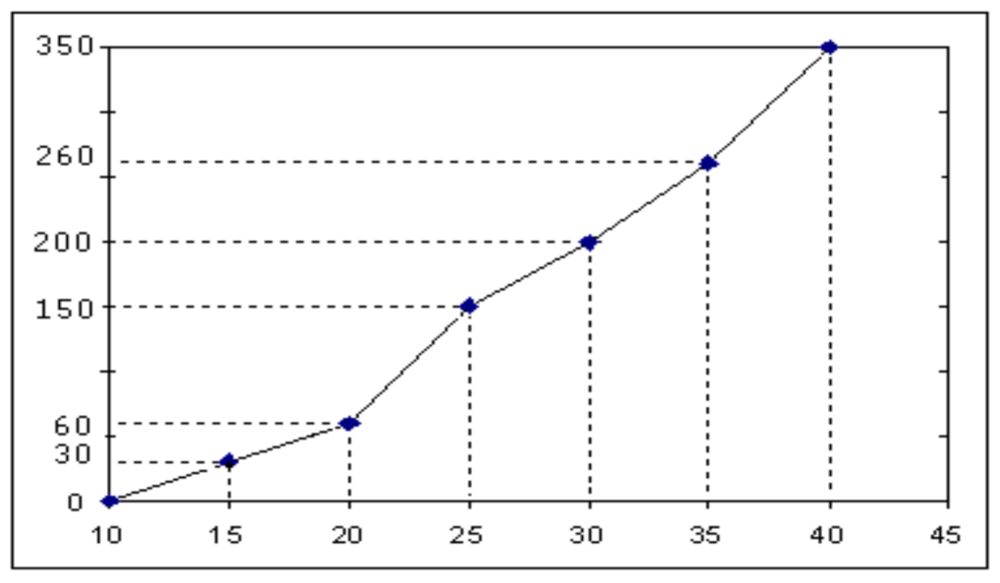

Capitulo 3 Análisis Descriptivo y Gráfico de datos cuantitativos
En este capítulo se resolverán problemas relativos a:
- Medidas de tendencia central: Media, Moda, Mediana.
- Medidas de dispersión: Recorrido, Varianza, Desviación típica, Coeficiente de variación, Recorrido intercuartílico. Error estándar.
- Representaciones gráficas: Diagrama de barras, Pictogramas, Cartogramas,
3.1 Pregunta test
Cuál de las siguientes medidas define mejor la tendencia central de los datos: 5 , 4, 42, 4, 6
- La mediana.
- La media.
- El sesgo
- El rango.
- La proporción.
3.1.1 Solución
3.2 Pregunta test
Los diagramas de sectores son muy útiles para comparar:
- Dos variables cualitativas en una población.
- Dos variables cuantitativas en una población.
- Una variable cualitativa en dos poblaciones.
- Una variable cuantitativa en dos poblaciones.
- Una variable cuantitativa con otra cualitativa.
3.2.1 Solución
3.3 Problema
El siguiente polígono de frecuencias absolutas acumuladas corresponde a la distribución de frecuencias de la variable \(X\) =“Duración en minutos de una consulta médica especializada.”

a) ¿Qué porcentaje de consultas han durado como máximo 30 minutos?
b) ¿Qué porcentaje de consultas han durado entre 25 y 30 minutos?
3.3.1 Solución
Al ser un polígono de frecuencias absolutas acumuladas, vemos que se han contabilizado un total de 350 consultas.
a) Vemos que hay 200 consultas que han durado como máximo 30 minutos. Como \(\frac{200}{350} \approx 0.57\), entonces un 57 % de las consultas han durado entre 25 y 30 minutos.
b) Entre 25 y 30 minutos, han habido \(200 - 150 = 50\) consultas. Como \(\frac{50}{350} \approx 0.14\), un 14 % de las consultas han durado entre 25 y 30 minutos
3.4 Pregunta test
En cuanto a la presentación ordenada del estudio de una variable aislada:
- Lo más informativo es mostrar las medidas de tendencia central.
- Lo más informativo es mostrar las medidas de dispersión.
- Se deben presentar todos los valores observados de la variable, uno a uno, de menor a mayor.
- Las representaciones gráficas dan más información que las tablas de frecuencia.
- A veces no tiene sentido usar frecuencias acumuladas.
3.4.1 Solución
3.5 Pregunta test
En las representaciones gráficas de variables cualitativas, la regla fundamental a tener en cuenta es:
- Las alturas en cada modalidad son proporcionales al valor de la variable.
- Las áreas para cada modalidad son proporcionales al valor de la variable.
- Las áreas para cada modalidad son proporcionales a las frecuencias acumuladas.
- Las áreas para cada modalidad son proporcionales a las frecuencias absolutas o relativas.
- Las alturas para cada modalidad son proporcionales a las frecuencias acumuladas.
3.5.1 Solución
3.6 Pregunta test
Entre las representaciones gráficas para variables cualitativas tenemos:
- Histogramas.
- Diagramas integrales.
- Diagramas diferenciales.
- Diagramas de cajas y bigotes.
- Nada de lo anterior.
3.6.1 Solución
3.7 Pregunta test
De los siguientes conceptos indique el que no tenga sentido:
- Diagrama de barras para la variable “Grupo sanguíneo”
- Pictograma para la variable “Altura”
- Diagrama integral para la variable “Nivel de colesterol”
- Diagrama de sectores para la variable “Sexo”
- Histograma para la variable “Peso”
3.7.1 Solución
3.8 Pregunta test
Si queremos representar gráficamente los porcentajes de una variable cuantitativa continua debemos usar:
- Pictogramas
- Diagrama de barras
- Diagrama diferencial acumulado
- Histograma
- No existe gráfica posible
3.8.1 Solución
3.9 Pregunta test
Los gráficos indicados para variables cualitativas son:
Los diagramas de barras y los histogramas
Los diagramas de barras, los de sectores y los pictogramas
Los histogramas y pictogramas
Sólo los diagramas de barras
Los diagramas integrales
3.10 Pregunta test
¿Qué gráfico elegirías para representar una las respuestas a una encuesta sobre el número de hijos que tiene la población?
- Histograma
- Diagrama de sectores
- Pictograma
- Diagrama de Barras
- Ninguna de las anteriores
3.10.1 Solución
3.11 Pregunta test
Para comparar la variabilidad relativa de la tensión arterial diastólica y el nivel de colesterol en sangre de una serie de individuos, utilizamos
- Las desviaciones típicas.
- Los rangos.
- Los coeficientes de variación.
- La diferencia de las medias.
- La diferencia de las varianzas.
3.11.1 Solución
3.12 Pregunta test
La media aritmética de una variable cuantitativa:
- Es siempre un valor de la variable.
- No tiene sentido calcularla para variables discretas.
- Es el valor más representativo de una modalidad.
- Si la variable es discreta, puede no ser única.
- Existe siempre.
3.12.1 Solución
3.13 Pregunta test
Las siguientes medidas son todas de centralización, excepto:
- La media.
- La moda.
- La mediana.
- Rango intercuartílico.
- El percentil 50.
3.13.1 Solución
3.14 Pregunta test
En un estudio descriptivo se obtiene una que el peso tiene una media de 60 kg y una desviación típica de 20 kg., mientras que la media de las edades es 15 años, con una desviación típica de 5 años. Entonces:
- Hay más dispersión en pesos que en edades.
- Hay más dispersión en edades que en pesos.
- Peso y edad están dispersos de modo equivalente.
- No tiene sentido compararlos al no coincidir las unidades de medida.
- Para comparar ambas dispersiones debemos usar la covarianza.
3.14.1 Solución
3.15 Pregunta test
¿Cuál de las siguientes características no se corresponde con el concepto de mediana?
- Es el centro de gravedad de la distribución.
- No se ve afectada por los valores extremos.
- Deja por debajo el mismo número de datos que por encima.
- Es el segundo cuartil.
- Todo lo anterior se corresponde con la mediana.
3.15.1 Solución
3.16 Pregunta test
Señale cuál de las siguientes afirmaciones es falsa:
- La media aritmética es siempre el centro de gravedad de la distribución.
- En una distribución continua simétrica, media y mediana coinciden.
- La media aritmética cambia cuando cambia algún dato.
- La mediana no siempre cambia cuando lo hace algún dato.
- En las distribuciones continuas simétricas todas las medidas de centralización coinciden.
3.16.1 Solución
3.17 Pregunta test
El coeficiente de variación:
- Permite comparar la dispersión de dos poblaciones.
- Es menor que la media.
- Es menor que la desviación típica.
- No depende de la media ni la desviación típica.
- Depende de la escala que se use al medir la variable.
3.17.1 Solución
3.18 Pregunta test
Se pide a unos enfermos que valoren su grado de mejoría tras un tratamiento en una escala de 1 a 5. De la siguiente colección de posibilidades, cuál cree que resume mejor los mismos:
- Media, Mediana y Moda.
- Percentil 25, Percentil 50, Percentil 75.
- Media y desviación típica.
- Mediana y desviación típica.
- Rango
3.18.1 Solución
3.19 Pregunta test
De las siguientes medidas, cuáles podria utilizar para argumentar en favor o en contra de la asimetría de la variable edad:
- Percentil 25 y percentil 75.
- Media y Percentil 60.
- Media y mediana
- Media y desviación típica.
- Ninguna de las anteriores.
3.19.1 Solución
3.20 Pregunta test
La pregunta: ¿qué nivel de colesterol sólo es superado por el 5% de los individuos?, tiene por respuesta:
- El percentil 95.
- El percentil 5.
- Los percentiles 2,5 y 97,5
- 95%.
- Nada de lo anterior.
3.20.1 Solución
3.21 Pregunta test
Qué peso no llega a alcanzar el 40% de los individuos de una población:
- El 40%.
- El 60%.
- El percentil 60.
- El percentil 40.
- Los percentiles 20 y 60.
3.21.1 Solución
3.22 Pregunta test
La media aritmética de una variable discreta:
- Puede ser un valor de la variable.
- No debería ser utilizada como medida de centralización.
- Es lo mismo que el percentil 50.
- Puede no ser única.
- Todo lo anterior es falso.
3.22.1 Solución
3.23 Pregunta test
Se pregunta a los individuos su opinión sobre una cuestión, pudiendo valorar estos su respuesta en términos de: en contra, en parte a favor, muy a favor, totalmente de acuerdo. Elija la afirmación correcta:
- Podemos calcular la media.
- Podemos calcular el coeficiente de variación.
- La variable es de tipo ordinal
- La variable es de tipo cualitativo nominal.
- Nada de lo anterior es cierto.
3.23.1 Solución
3.24 Pregunta test
En una población, el 70% de las alturas consideradas “más normales” se encuentran:
- Por encima del percentil 70.
- Por debajo del cuantil 0,30
- Entre el percentil 30 y el 70
- Entre el percentil 15 y el 85.
- Entre la media y la mediana.
3.24.1 Solución
3.25 Pregunta test
Las medidas de centralización, en cuanto a la información que ofrecen sobre una variable numérica, preferimos (por orden, de peor a mejor):
- media, mediana, moda
- moda, media, mediana
- media, moda, mediana.
- No se puede en general recomendar una como mejor que las otras.
- Todo lo anterior es falso.
3.25.1 Solución
3.26 Pregunta test
Si una muestra posee valores anómalos, de las siguientes cuál usarías como medida de dispersión:
- Varianza.
- Desviación típica.
- Rango intercuartílico.
- Rango.
- Máximo y coeficiente de variación.
3.26.1 Solución
3.27 Pregunta test
Si queremos saber cómo de disperso está una variable relativamente con respecto a la magnitud de los valores centrales de la misma, usaremos:
- Varianza.
- Desviación típica.
- Rango intercuartílico.
- Rango.
- Coeficiente de variación.
3.27.1 Solución
3.28 Pregunta test
Si el coeficiente de asimetría en una población presenta el valor 0,99 entonces:
- La distribución presenta una cola a la derecha.
- La distribución presenta una cola a la izquierda.
- La distribución es más apuntada que la normal.
- La distribución es menos apuntada que la normal.
- La distribución es prácticamente simétrica.
3.28.1 Solución
3.29 Pregunta test
Si la media del peso en una población es 60 kg. y la mediana 65kg., entonces afirmamos que la distribución del peso en la población es:
- Platicúrtica.
- Mesocúrtica.
- Leptocúrtica.
- Asimétrica.
- Unimodal.
3.29.1 Solución
3.30 Pregunta test
Si el coeficiente de asimetría en una población presenta el valor -5,22 entonces:
- La distribución presenta una cola a la derecha.
- La distribución presenta una cola a la izquierda.
- La distribución es más apuntada que la normal.
- La distribución es menos apuntada que la normal.
- Ese valor de asimetría es imposible.
3.30.1 Solución
3.31 Pregunta test
Medimos el número de glóbulos rojos y el de blancos en cada individuo de una población. Se observa determinada variabilidad en esas cantidades. Queremos saber de qué tipo de célula se presenta mayor variabilidad
- Compararemos las desviaciones típicas.
- Compararemos los rangos.
- Estudiaremos la covarianza.
- Estudiaremos el coeficiente de correlación lineal de Pearson.
- Compararemos los coeficientes de variación.
3.31.1 Solución
3.32 Pregunta test
En una muestra de 1000 mujeres se estudia su número de hijos. Si quiero tener el máximo de información sobre la variable del estudio, preferimos:
- Media, Mediana y Moda.
- Percentil 25, Percentil 50, Percentil 75.
- Media y desviación típica.
- Media, mediana, cuartiles, asimetría, curtosis y desviación típica.
- Distribución de frecuencias
3.32.1 Solución
3.33 Pregunta test
El 3% de los individuos tiene una altura superior a 190cm. El 5% mide menos de 150cm. Conocemos:
- El percentil 3
- El cuantil 0,06
- El percentil 95
- El percentil 97
- Nada de lo anterior.
3.33.1 Solución
3.34 Pregunta test
Respecto a las medidas de centralización:
- La media no debe usarse en distribuciones muy asimétricas.
- La moda puede no ser única.
- En distribuciones simétricas media, mediana y moda coinciden.
- Las tres anteriores son correctas.
- Sólo la a) y la b) son correctas
3.34.1 Solución
3.35 Pregunta test
El coeficiente de asimetría en una población vale 3. Elija la afirmación correcta:
- La distribución presenta una cola a la derecha.
- La distribución presenta una cola a la izquierda.
- La distribución es simétrica.
- La distribución es más apuntada que la normal
- La media es igual a la mediana.
3.35.1 Solución
3.36 Pregunta test
¿Cuál de las siguientes medidas define mejor la tendencia central de los datos: 1, 2, 4, 5, 9, 1, 3, 9, 400?
- Media.
- Cuantil 0,5.
- Moda
- Desviación típica.
- Ninguna de las anteriores.
3.36.1 Solución
3.37 Pregunta test
De las siguientes variables ¿con cuáles NO puedo calcular la media?
- temperatura corporal
- pH del estómago
- grupo sanguíneo
- número de glóbulos rojos
- edad
3.37.1 Solución
3.38 Pregunta test
De las siguientes variables con cuál sería menos adecuado un diagrama de barras?
- Número de hijos
- Número de coches que posee la familia
- Número de cigarros fumados al día
- Número de glóbulos rojos
- Número de mascotas.
3.38.1 Solución
3.39 Pregunta test
Cuál es la mediana de los siguientes datos 22, 5, 9, 11, 10, 14, 7
- 5
- 9
- 11
- 10
- 14
3.39.1 Solución
3.40 Pregunta test
Si el cuantil 0,9 del peso es 70 kilogramos, quiere decir esto:
- Que una frecuencia del 70% individuos pesa más de 70 kilogramos.
- Que una frecuencia del 90% de individuos pesa más de 70 kilogramos.
- Que una frecuencia del 90% individuos pesa menos de 70 kilogramos.
- Que una frecuencia de 70% de individuos pesa menos de 90 kilogramos.
- Todas son falsas.
3.40.1 Solución
3.41 Pregunta test
En una distribución: \(P_{25} = 40\), \(P_{50} =60\) y \(P_{75} =70\).
- La distribución es simétrica
- La distribución sugiere asimetría negativa
- La distribución sugiere asimetría positiva
- La distribución es leptocúrtica
- Las opciones a) y d) son ciertas
3.41.1 Solución
3.42 Pregunta test
En una distribución la mediana es 20 y la media es 26:
- Con seguridad hay asimetría negativa
- Con seguridad hay asimetría positiva
- Hay colas hacia la derecha y hacia la izquierda.
- Los datos son simétricos.
- Los datos sugieren una cola hacia la derecha. Habría que estudiarlo con más detalle
3.42.1 Solución
3.43 Pregunta test
El Rango Intercuartílico:
- Es sensible a los datos extremos.
- Es la distancia ente el primer y segundo cuartil.
- Es la raíz cuadrada de la varianza
- Sus unidades son el cuadrado de las variables.
- Mide el grado de dispersión de los datos, independientemente de su causa.